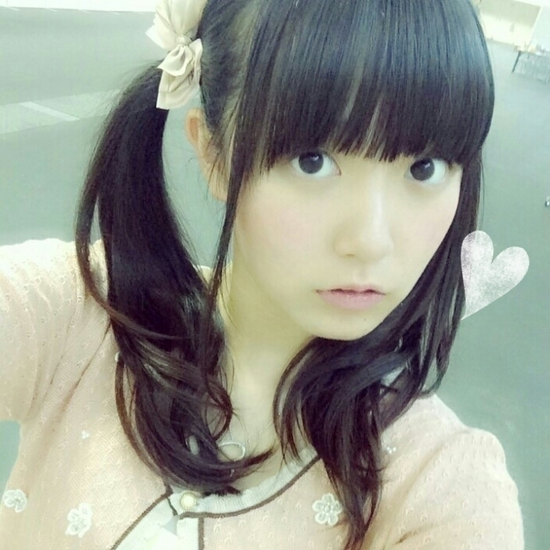
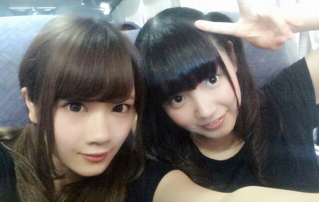
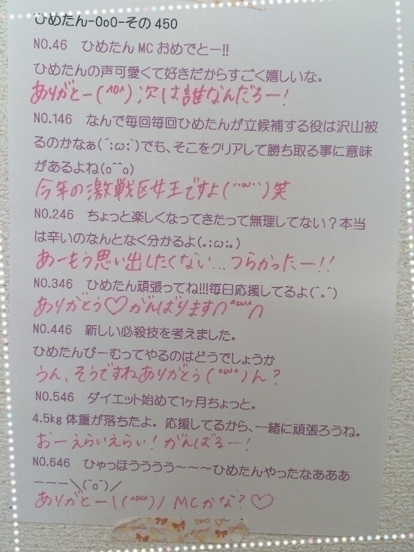
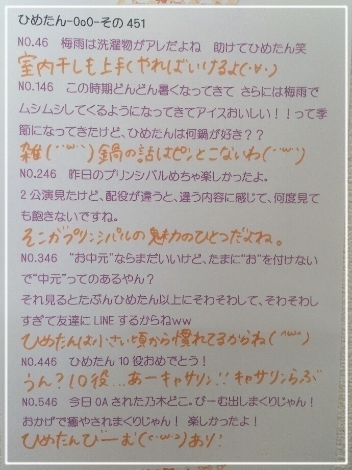

| 2014/09 18 Thu | ひめたん-OoO-その479 |

お仕事終わってから
さゆとふたりで遊んだのー∩(・ω・)∩
あーふたりの仲良さげを
貼りたいところなんだけど
風景とか食べ物しか撮ってない～＊
こんなのしか......

きゃ♡
一時間くらいかな？
順番待ちしてる間ずっと
お話してたんだけどね
途中からなぜか手つないでたみたいで
しばらくして気づいた時には
ふたりともびっくりだよね(〃´ω`〃)
あとは半袖のお洋服着てたから
にのうでをひたすら
むにむにされてた気がする。
ふたりとも待てるひとだったから
一時間なんて全然辛くなかったよ～
ふたりで遊んだのは
はじめてだったけど楽しかったよー
さゆーまた行こうねー♡
今度はちゃんと写メも撮ってきます......
明日はのぎ天更新日ですよ～
修行！修行！

そして今週末は2日間名古屋！
いくよーってひとは
よろしくお願いします(＊^ω^＊)
名古屋はツアーで行ったけど
握手は久々だから
たくさんお話したいな\❁/
土曜の全握はみなみとふたりで
14レーンで待ってます♪
みなみファンのみなさん
1日よろしくお願いしますっ
ぜひひめたんとも仲良くしてください♡
日曜の個握は1部から3部に参加します！
お寝坊しないように気を付けてね(>_<)
どんな服着ようかな～
次回の乃木ののは
高山一実ちゃん、堀未央奈ちゃんです☆
私はMCとして3ヶ月半
出演させていただきましたが
いよいよ次回が最後と
なってしまいます(´；_；｀)
オンエア後にいろいろ振り返って感想書くね
とりあえず乃木のの大好きなのと
ラジオ大好きだから寂しい(´；_；｀)
このMC期間中に成長できたかな......？
ひめたん最後のMC回 ぜひ聴いてほしい！
乃木のの公式ブログにも
書いてありましたが
番組史上初の出来事が起こります～
先週とはまた違った感じの！笑

 みさみさビームとひめたんビーム
みさみさビームとひめたんビーム
どっちが幸せな茶番に出来ますか？
ひめたんしか！
おそらくM気質と思われるひめたんに
質問なんですど、ツンデレの自覚が無いのに
周りからめっちゃ言われます。
どうしたら治りますか？
私はそんなんじゃないです(´・ω・｀)
えー認めたらいいんじゃん？
みんなが言うならそうなんだよ！
あ、いやだから私は違......
僕は、ひめたんは根は
真面目な人なのかなーって思ってます！
その通りだよ( ´_ゝ`)
真面目も真面目、
真面目を拗らせたような大真面目だよ←
ひめたんと初めて握手したんだけど、
手がすごく柔らかくてスベスベしてたのが
印象に残ったんですが、
お手入れしてるんですか？
それともプリンのおかげですか？
嬉しいーありがとー♡
ひめたんの中のぷりんが占める割合は
まあ少なくはないと思うけど
手に関してぷりんは関係ないかな( ˇωˇ )
ぷにぷにしてるってよく言われるよ～＊
まなったんは
デートの秋とか言ってたよ(*ﾟ∀ﾟ*)ｷｬ-♡
あーさすが真夏さん(白目)

ひめたんの日記の
コメント欄下２ケタに46を踏んだ方へ
手書きでコメ返するコーナー
＼ ひめたん46 ／


いつもたくさんのコメント
ありがとうございます
握手会の感想とか
乃木ののとかメールのお返事が
メインだったかな？♡
なんかもう解禁前のお仕事のお話とか
まだお見せできない衣装の写メとか
いろいろあってもどかしい( >_< )
夏アニメも最終回が近づいてくる～
秋からは何観ようかな？
とりあえず！弱虫ペダル！
(＊´・ω・＊)
コメント(858)
2014/09/18 23:36